Publication
Published and accepted papers, together with preprints.
Preprints
-
Mixed-precision GPU acceleration for large-scale minimum enclosing ball problems
2026. arXiv.
Research highlight: Mixed-precision GPU acceleration for large-scale minimum enclosing ball problems
Low-precision screening and high-precision refinement reduce GPU work while retaining an accurate, fully checked enclosing ball.
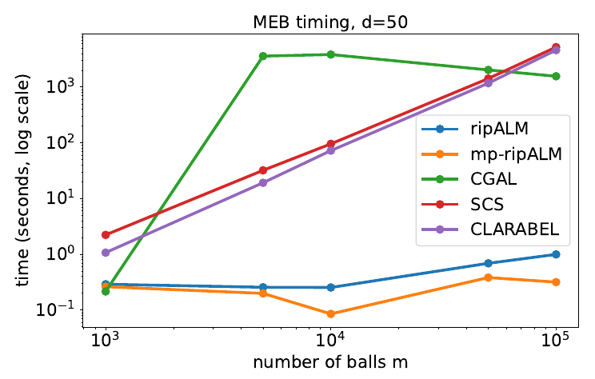
Runtime at d = 50 for 1,000–100,000 balls. ripALM and mp-ripALM run on GPU; CGAL, SCS, and CLARABEL run on CPU. -
Beyond expected information gain: stable Bayesian optimal experimental design with integral probability metrics and plug-and-play extensions
2026. arXiv.
Research highlight: Beyond expected information gain: stable Bayesian optimal experimental design with integral probability metrics and plug-and-play extensions
Integral probability metrics provide stable, geometry-aware alternatives to expected information gain for Bayesian experimental design.
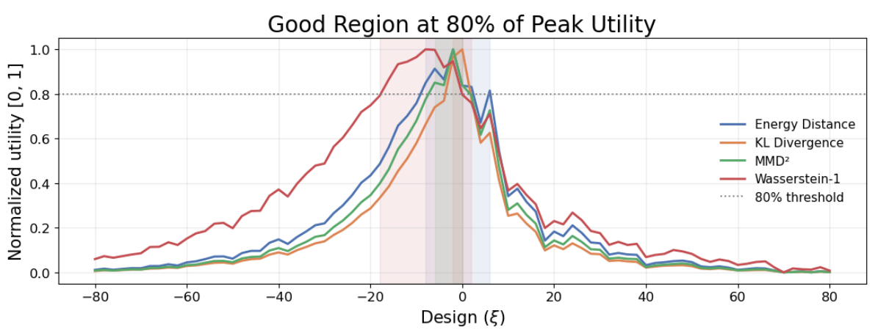
Preference-learning example: design regions above 80% of each utility’s own peak. -
Fast and effective computation of generalized symmetric matrix factorization
2026. arXiv.
Research highlight: Fast and effective computation of generalized symmetric matrix factorization
Exactness results make generalized symmetric factorization amenable to the convergent A-NAUM alternating method.
Two exactness results Layer What becomes exact Model A finite quadratic penalty enforces symmetry. Relaxation Stationary points are linked through an auxiliary-variable formulation. Both statements require the conditions established in the paper. -
D-ripALM: A tuning-friendly decentralized relative-type inexact proximal augmented Lagrangian method
2026. arXiv.
Research highlight: D-ripALM: A tuning-friendly decentralized relative-type inexact proximal augmented Lagrangian method
Relative-error control makes decentralized ALM easier to tune, with convergence analysis covering nonsmooth, generally convex objectives.
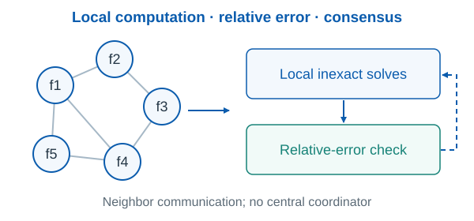
A simplified view of the inner/outer switching rule and neighbor communication. -
Convergence of a relative-type inexact proximal ALM for convex nonlinear programming
2025. arXiv.
Research highlight: Convergence of a relative-type inexact proximal ALM for convex nonlinear programming
A unified analysis explains the global behavior and asymptotic rates of relative-type inexact preconditioned proximal ALM.
Convergence at three levels Object Guarantee Iterates Global convergence Local behavior Asymptotic linear or superlinear rates Ergodic averages Objective-residual and feasibility bounds Each guarantee is subject to its stated assumptions; local rate results require additional conditions. -
PINS: Proximal iterations with sparse Newton and Sinkhorn for optimal transport
2025. arXiv.
Research highlight: PINS: Proximal iterations with sparse Newton and Sinkhorn for optimal transport
Sparse Newton and Sinkhorn steps make entropic proximal iterations accurate and efficient, with large gains on the reported benchmarks.
Matched-accuracy wall time (seconds) Instance Sinkhorn + EPPA PINS Synthetic, n = 400 47.68 1.455 MNIST, N = 2 24.66 1.66 MNIST, N = 4 3,793.2 51.74 Same EPPA outer iteration count and matched final accuracy. Selected rows from the paper; N is its MNIST augmentation setting. -
ripALM: A relative-type inexact proximal augmented Lagrangian method with applications to quadratically regularized optimal transport
2024. arXiv.
Research highlight: ripALM: A relative-type inexact proximal augmented Lagrangian method with applications to quadratically regularized optimal transport
One relative tolerance replaces delicate error-sequence tuning while retaining convergence guarantees for inexact proximal ALM.
Practical relative-error control Component ripALM Inner tolerance One relative parameter in [0, 1) Tolerance sequence No prescribed summable sequence Correction step Not required “One parameter” refers to the inner error criterion, not all algorithm settings. -
PNOD: An efficient projected Newton framework for exact optimal experimental designs
Research highlight: PNOD: An efficient projected Newton framework for exact optimal experimental designs
Efficient projected Newton node solves accelerate branch-and-bound for integer A- and D-optimal experimental designs.
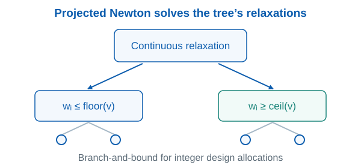
The schematic highlights the continuous relaxations that dominate node evaluation.
{kind=link}
{kind=link}
{kind=link}
{kind=link}
Papers
-
A provably convergent and practical algorithm for Gromov-Wasserstein optimal transport
NeurIPS 2026, accepted. arXiv.
Research highlight: A provably convergent and practical algorithm for Gromov-Wasserstein optimal transport
A practical inexact projected-gradient framework brings verifiable projection accuracy and convergence guarantees to Gromov–Wasserstein transport.
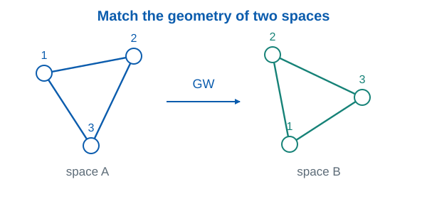
Toy spaces illustrate matching within-space geometry; the algorithm uses verifiable inexact projections. -
From equations to insights: Unraveling symbolic structures in PDEs with LLMs
SIAM Journal on Scientific Computing, accepted, 2026. SISC, arXiv.
Research highlight: From equations to insights: Unraveling symbolic structures in PDEs with LLMs
LLMs predict operators in PDE solutions, narrowing symbolic search and improving interpretable analytical approximations.
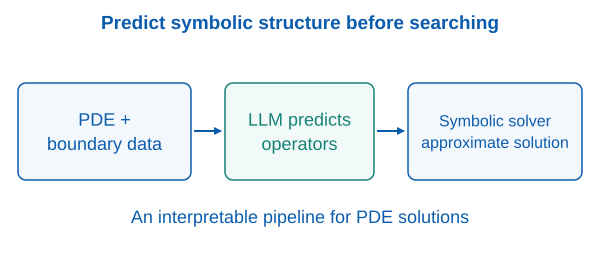
A simplified view of operator prediction guiding symbolic solution construction. -
OptimAI: Optimization from natural language using LLM-powered AI agents
Journal of Machine Learning, accepted, 2026. JML, arXiv.
Research highlight: OptimAI: Optimization from natural language using LLM-powered AI agents
Four cooperating LLM roles formulate, plan, implement, and debug optimization problems expressed in natural language.
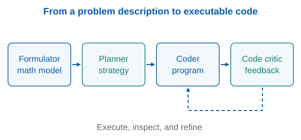
A simplified architecture: structured roles and iterative debugging turn descriptions into executable solutions. -
Accelerating multi-block constrained optimization by learning penalty parameters
Communications on Pure and Applied Analysis, accepted, 2026. CPAA, arXiv.
Research highlight: Accelerating multi-block constrained optimization by learning penalty parameters
Learned penalty parameters accelerate multi-block MPALM, reducing the need for manual tuning on Lasso and optimal transport problems.
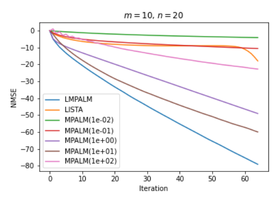
Lasso example, m = 10 and n = 20: log-normalized MSE versus iterations. LMPALM uses learned penalties. -
Fast and certifiable trajectory optimization Best Paper Award Finalist
in Algorithmic Foundations of Robotics XVI, Volume 1: Proceedings of the Sixteenth Workshop on the Algorithmic Foundations of Robotics, Springer Proceedings in Advanced Robotics, vol. 37, pp. 43-65, Springer, 2026. Springer, arXiv, code.
Research highlight: Fast and certifiable trajectory optimization
Sparse SDP relaxations and GPU computation produce practical robot trajectories with computable global-optimality certificates.
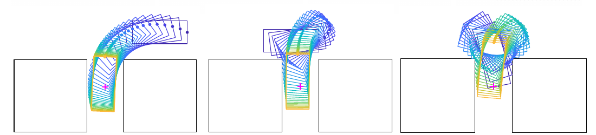
Car back-in trajectories. Across the paper’s five benchmarks, certified suboptimality is below 1%. -
NewVEM: A Newton vertex exchange method for a class of constrained self-concordant minimization problems
Journal of Scientific Computing 105, no. 64 (2025). JSC, arXiv.
Research highlight: NewVEM: A Newton vertex exchange method for a class of constrained self-concordant minimization problems
Projected Newton outside and vertex exchange inside form a fast two-level method for self-concordant optimization over generalized simplices.
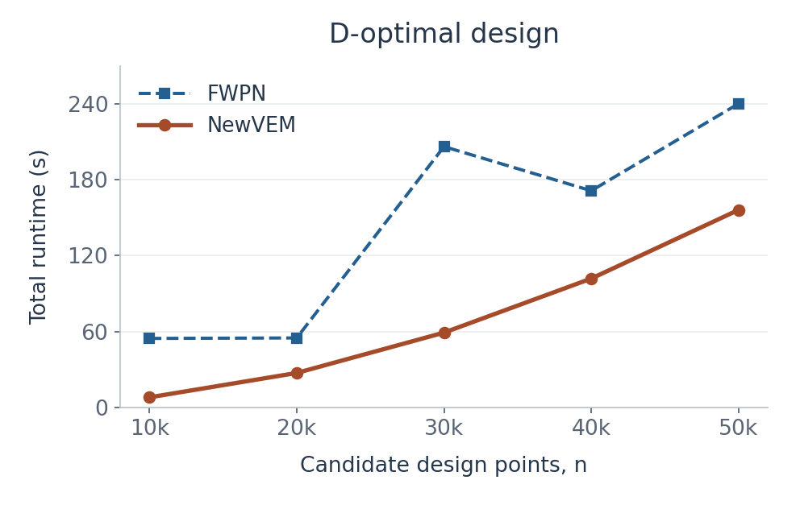
D-optimal design with a quadratic/trigonometric model (p = 4). Both methods use the stopping criterion λₖ ≤ 10⁻³. -
Nesterov's accelerated Jacobi-type methods for large-scale symmetric positive semidefinite linear systems
SIAM Journal on Scientific Computing 47, no. 6 (2025). SISC, arXiv, code.
Research highlight: Nesterov's accelerated Jacobi-type methods for large-scale symmetric positive semidefinite linear systems
Nesterov acceleration improves Jacobi-type convergence while preserving the simple, parallel structure of the updates.
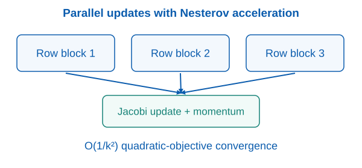
The rate is for the associated convex quadratic objective, under the method’s assumptions. -
An inexact Halpern iteration with application to distributionally robust optimization
Journal of Optimization Theory and Applications 260, no. 58 (2025): 1-41. JOTA, arXiv, code.
Research highlight: An inexact Halpern iteration with application to distributionally robust optimization
Inexact Halpern updates retain O(1/k) residual rates—expected residuals in the stochastic setting—and enable practical Wasserstein DRO.
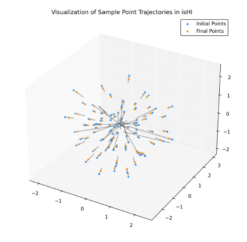
Empirical samples (blue) move toward worst-case perturbations (orange) in the nonlinear DRO example. -
A squared smoothing Newton method for semidefinite programming
Mathematics of Operations Research 50, no. 4 (2025): 2433-3282. MOOR, arXiv.
Research highlight: A squared smoothing Newton method for semidefinite programming
Huber smoothing preserves zero eigenvalue contributions, allowing a squared smoothing Newton method to exploit structure in SDP.
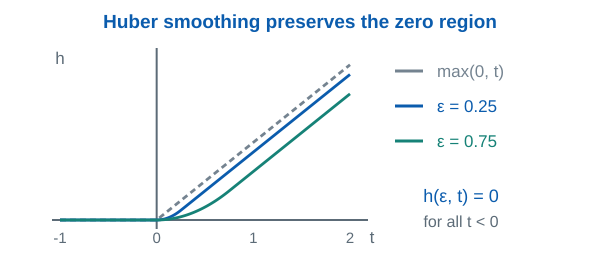
Scalar Huber smoothing preserves the zero region and smooths the PSD projection when applied to eigenvalues. -
On the stochastic (variance-reduced) proximal gradient method for regularized expected reward optimization
Transactions on Machine Learning Research, 2024. TMLR, arXiv.
Research highlight: On the stochastic (variance-reduced) proximal gradient method for regularized expected reward optimization
Importance-sampling-based variance reduction improves sample complexity for general regularized expected-reward optimization.
Samples to reach ε-stationarity Method Sample complexity Stochastic proximal gradient O(ε⁻⁴) Variance-reduced proximal gradient with PAGE O(ε⁻³) Bounds hold under the respective assumptions; the improved rate uses additional conditions. -
A sparse smoothing Newton method for solving discrete optimal transport problems
ACM Transactions on Mathematical Software 50, no. 3 (2024): 1-26. TOMS, arXiv.
Research highlight: A sparse smoothing Newton method for solving discrete optimal transport problems
A Huber-based Newton method exploits sparse transport solutions to reduce computation and memory for OT and fixed-support Wasserstein barycenters.
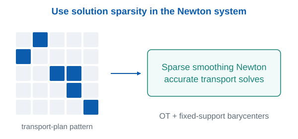
The matrix shows an illustrative sparsity pattern, not a measured transport plan. -
A corrected inexact proximal augmented Lagrangian method with a relative error criterion for a class of group-quadratic regularized optimal transport problems
Journal of Scientific Computing 99, no. 79 (2024). JSC, arXiv.
Research highlight: A corrected inexact proximal augmented Lagrangian method with a relative error criterion for a class of group-quadratic regularized optimal transport problems
A single relative tolerance makes corrected proximal ALM with semismooth Newton subsolves practical for group-quadratic regularized transport.
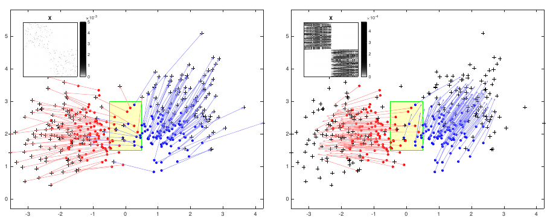
Left: λ₁ = λ₂ = 0. Right: λ₁ = λ₂ = 1. Regularization changes the structure of the transport plan. -
Accelerating nuclear-norm regularized low-rank matrix optimization through Burer-Monteiro decomposition
Journal of Machine Learning Research 25, no. 379 (2024): 1-52. JMLR, arXiv, code.
Research highlight: Accelerating nuclear-norm regularized low-rank matrix optimization through Burer-Monteiro decomposition
Cheap factorized steps gain the safeguards of convex optimization, while the algorithm adjusts the factorization rank automatically.
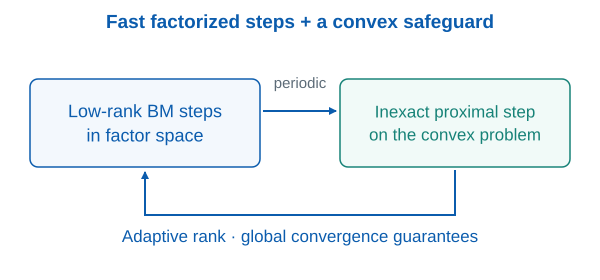
The schematic separates the fast factorized phase from the global-convergence safeguard. -
An inexact projected gradient method with rounding and lifting by nonlinear programming for solving rank-one semidefinite relaxation of polynomial optimization
Mathematical Programming 201, no. 1-2 (2023): 409-472. MP, arXiv, code.
Research highlight: An inexact projected gradient method with rounding and lifting by nonlinear programming for solving rank-one semidefinite relaxation of polynomial optimization
Safeguarded low-rank local search accelerates a globally convergent SDP method, combining fast nonconvex steps with convex guarantees.
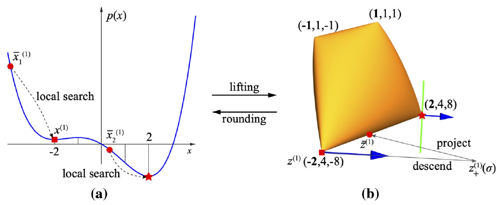
The paper’s univariate example explains how rounding, local search, lifting, and SDP descent work together. -
An efficient implementable inexact entropic proximal point algorithm for a class of linear programming problems
Computational Optimization and Applications 85, no. 1 (2023): 107-146. COAP, arXiv, code.
Research highlight: An efficient implementable inexact entropic proximal point algorithm for a class of linear programming problems
Checkable inexact stopping rules make entropic proximal iterations practical for structured LPs, including capacity-constrained multi-marginal transport.
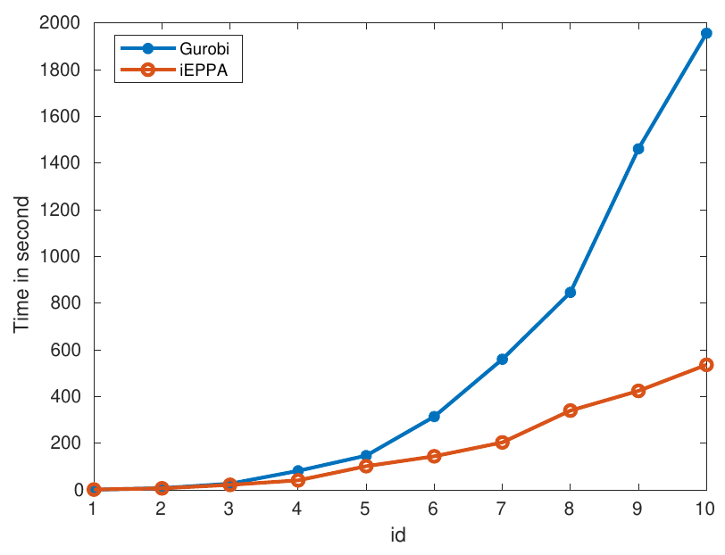
Three-marginal capacity-constrained transport, n = 50 × id. -
QPPAL: A two-phase proximal augmented Lagrangian method for high dimensional convex quadratic programming problems
ACM Transactions on Mathematical Software 48, no. 3 (2022): 1-27. TOMS, arXiv, code.
Research highlight: QPPAL: A two-phase proximal augmented Lagrangian method for high dimensional convex quadratic programming problems
A two-phase solver pairs inexpensive warm-start iterations with accurate proximal ALM refinement for high-dimensional convex QP.
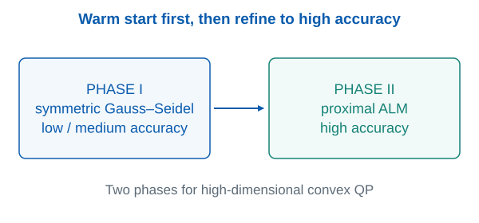
Phase I targets low-to-medium accuracy; Phase II efficiently refines the warm start. -
On degenerate doubly nonnegative projection problems
Mathematics of Operations Research 47, no. 3 (2022): 2219-2239. MOOR, arXiv.
Research highlight: On degenerate doubly nonnegative projection problems
Augmented Lagrangian subproblems overcome the singular Newton systems that make degenerate doubly nonnegative projection difficult.
Handling degenerate DNN projection Approach Newton equations Direct KKT solve The Jacobian can be singular under degeneracy. Augmented Lagrangian A sequence of better-conditioned nonsmooth equations. The DNN cone combines positive semidefiniteness with entrywise nonnegativity. -
A new homotopy proximal variable-metric framework for composite convex minimization
Mathematics of Operations Research 47, no. 1 (2022): 508-539. MOOR, arXiv.
Research highlight: A new homotopy proximal variable-metric framework for composite convex minimization
A homotopy parameterization and primal-dual-primal construction preserve useful regularizer structure in proximal Newton subproblems.
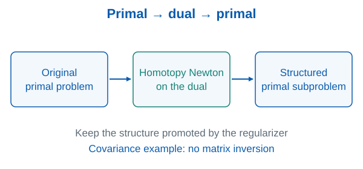
In the covariance-estimation specialization, the method avoids matrix inversion and Cholesky factorization. -
An inexact augmented Lagrangian method for second-order cone programming with applications
SIAM Journal on Optimization 31, no. 3 (2021): 1748-1773. SIOPT, arXiv.
Research highlight: An inexact augmented Lagrangian method for second-order cone programming with applications
Quadratic-growth conditions connect SOCP geometry to fast ALM residual convergence and an effective solver for structured cone problems.
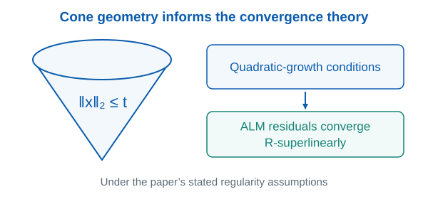
The convergence implication holds under the regularity conditions established in the paper.
{kind=link}
{kind=link}
{kind=link}
{kind=link}
{kind=link}
{kind=link}
{kind=link}
{kind=link}
{kind=link}
{kind=link}
{kind=link}
{kind=link}
{kind=link}
{kind=link}
{kind=link}
{kind=link}
{kind=link}